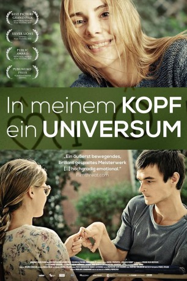

#1942 In meinem Kopf ein Universum
 
 IMDB-Wertung: 7.8 / 10
IMDB-Wertung: 7.8 / 10  Metascore: 0
Metascore: 0 
Der junge Mateus (Dawid Ogrodnik) leidet an einer zerebralen Bewegungsstörung und ist von Geburt an nicht in der Lage, mit seiner Umgebung zu kommunizieren. Die Ärzte vergleichen seinen Status wenig einfühlsam mit dem eines Gemüses. Doch hinter der sprachlichen Barriere steckt in dem gelähmten Körper ein ebenso aufgeweckter wie intelligenter Junge. Mateus ist zwar nicht im Stande sich mitzuteilen, nimmt aber alles wahr, was um ihn herum passiert, seien es die herabwürdigenden Aussagen seiner Schwester oder das Lächeln der schönen Anka (Anna Karczmarczyk). Mateus' Eltern suchen ihm eine neue Betreuerin, die in ihren jungen Jahren die nötigen Ambitionen für den schwierigen Fall mitbringt. Als schließlich noch eine Ärztin auf Mateusz aufmerksam wird und an ihm neue Methoden testet, beginnt sich das Blatt zum Guten zu wenden.
Jahr: 2013
Dauer: 112 Minuten
FSK: 6
Land: Polen Studio: MFA FilmdistributionTonspuren:
Untertitel:
Auflösung: 1080p (1920x808) Größe: 3000 MB
Genre: Drama
Regisseur: Maciej Pieprzyca
Drehbuch: Maciej Pieprzyca
Soundtrack: Bartosz Chajdecki
Darsteller:
- Dawid Ogrodnik als Mateusz
- Anna Karczmarczyk als Anka
- Dorota Kolak als Mateusz's Mother
- Arkadiusz Jakubik als Mateusz's Father
- Helena Sujecka als Matylda
- Mikolaj Roznerski als Tomek
- Kamil Tkacz als Young Mateusz
- Tymoteusz Marciniak als Young Tomek
- Anna Nehrebecka als Bliss Teacher
- Katarzyna Zawadzka als Magda
- Agnieszka Kotlarska als Mother of Anka
- Janusz Chabior als 'Lysys'
- Gabriela Muskala als Doctor
- Lech Dyblik als Healer
- Dariusz Chojnacki als Matylda's Boyfriend
- Izabela Dabrowska als Neighbour , scenes deleted
- Witold Wielinski als Neighbour
- Miroslaw Neinert als Uncle from Deutschland
- Grazyna Bulka als Aunt form Deutschland
- Klaudia Kaca als Cousine form Deutschland
- Marek Kalita als Magda's Father
- Teresa Iwko als Magda's Stepmother
- Grzegorz Mielczarek als Krzysztof
- Ewa Serwa als Manager of centre
- Anita Poddebniak als Carer
- Monika Chomicka als Orderly
- Milena Lisiecka als Orderly
- Miroslaw Kotowicz als Male Nurse
- Eliza Borowska als Doctor in centre
- Krzysztof Ogloza als Priest
- Jadwiga Wianecka als Head-Teacher
- Jerzy Matalowski als Inspector
- Piotr Zurawski als Marek
- Piotr Trojan als Leszek
- Piotr Lesniak als Piotrek
- Adela Oczkos als Adela
- Iwona Sitkowska als Girl
- Julia Balsewicz als Reporter
- Anna Terpilowska als Practicant Ania
- Dagmara Bak als Practicant
- Marcela Stanko als Young Practicant
- Beata Wnuk als Masseuse
- Jaroslaw Stypa als Male Nurse
- Igor Wilewski-Sobczuk als Matylda's Son
- Ada Kolodziejczyk als Matylda's Daughter
Datei: X:\2013(I-M)\In meinem Kopf ein Universum (2013, FSK6, 1920x808).mkv seit 06.09.2015
Festplatte: HD 2013(I-Z)-2014(A-Z)
 Es gibt insgesamt 89 Filme in der Gruppe '2013(I-M)'
Es gibt insgesamt 89 Filme in der Gruppe '2013(I-M)'